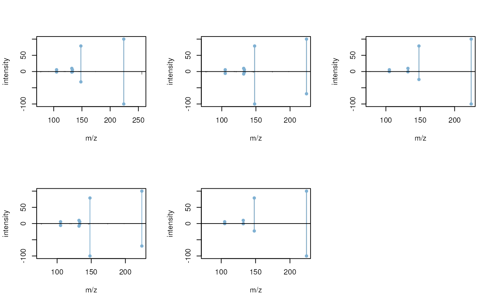

MetaboAnnotation Packagevignettes/Spectra-matching-with-MetaboAnnotation.Rmd
Spectra-matching-with-MetaboAnnotation.RmdLast modified: 2022-01-31 19:55:45
Compiled: Mon Jan 31 20:01:43 2022
The Spectra package provides all the functionality required for annotation and identification workflows for untargeted LC-MS/MS data, but, while being very flexible and customizable, it might be too cumbersome for beginners or analysts not accustomed with R. To fill this gap we developed the MetaboAnnotation package that builds upon Spectra and provides functions for annotation of LC-MS and LC-MS/MS data sets tailored towards the less experienced R user.
MetaboAnnotation
In this example use case we match experimental MS2 spectra from a DDA experiment on a pesticide mix against reference spectra from MassBank. Below we load the experimental data file which is distributed via the msdata R package.
library(Spectra)
library(pander)
#' Load the pesticide mix data
fl <- system.file("TripleTOF-SWATH", "PestMix1_DDA.mzML", package = "msdata")
pest <- Spectra(fl)We next restrict the data set to MS2 spectra only and in addition clean these spectra by removing all peaks from a spectrum that have an intensity lower than 5% of the largest peak intensity of that spectrum. Finally, single-peak spectra are removed.
#' restrict to MS2 data and remove intensities with intensity lower 5%
pest <- filterMsLevel(pest, msLevel = 2L)
#' Remove peaks with an intensity below 5% or the spectra's BPC
low_int <- function(x, ...) {
x > max(x, na.rm = TRUE) * 0.05
}
pest <- filterIntensity(pest, intensity = low_int)
#' Remove peaks with a single peak
pest <- pest[lengths(pest) > 1]This leads to a data set consisting of 2451 spectra. We next connect to a MassBank database (running within this docker image) and create a Spectra object representing that data.
library(RMariaDB)
library(MsBackendMassbank)
#' Connect to the MassBank MySQL database
con <- dbConnect(MariaDB(), user = "massbank", dbname = "MassBank",
host = "localhost", pass = "massbank")
mbank <- Spectra(con, source = MsBackendMassbankSql())We could now directly calculate similarities between the 2451 experimental (query) MS2 spectra and the 86576 MassBank reference (target) spectra using the compareSpectra method, but this would be computationally very intense because a similarity score would be calculated between each query and each target spectrum. As alternative we use here the matchSpectra function from the MetaboAnnotation package that allows to restrict similarity calculations between query and target spectra with similar m/z of their precursor ion or have a similar retention time.
Below we create a CompareSpectraParam object setting parameter requirePrecursor = TRUE (to restrict similarity calculations only to query and target spectra with a similar precursor m/z) and ppm = 10 (m/z difference between the query and target precursor has to be within 10 ppm). Parameter THRESHFUN enables to define a threshold function that defines which spectra are considered matching. With the function used below only MS2 spectra with a similarity (calculated with the default dotproduct function) larger or equal to 0.8 are considered matching.
library(MetaboAnnotation)
prm <- CompareSpectraParam(ppm = 10, requirePrecursor = TRUE,
THRESHFUN = function(x) which(x >= 0.8))We next call matchSpectra with this parameter object and pass pest and mbank as query and target Spectra, respectively. This takes approximately 1 minute to complete, which is not tremendously fast, but still much faster than a pairwise comparison between all query and target spectra would be.
mtch <- matchSpectra(pest, mbank, param = prm)
mtch## Object of class MatchedSpectra
## Total number of matches: 78
## Number of query objects: 2451 (29 matched)
## Number of target objects: 86576 (47 matched)As a result we get a MatchedSpectra object that contains the query and target spectra as well as the matching result (i.e. the information which query spectrum matches with which target spectrum based on what similarity score). We can use the query and target functions to access the query and target Spectra objects and matches to extract the matching information. Below we display the first 6 rows of that matrix.
## query_idx target_idx score
## 1 163 31941 0.9264249
## 2 163 32022 0.9264249
## 3 163 32214 0.9264249
## 4 163 32508 0.9264249
## 5 163 32667 0.9264249
## 6 163 32900 0.9264249Functions whichQuery and whichTarget return the (unique) indices of the query and target spectra that could be matched.
whichQuery(mtch)## [1] 163 320 420 433 493 496 497 571 682 685 686 805 806 809 810
## [16] 819 829 983 1095 1454 1457 1706 1830 1834 1839 1906 2047 2048 2050As we can see only few of the query spectra (29 of the 2451 spectra) could be matched. This is in part because for a large proportion spectra in MassBank no precursor m/z is available and with requirePrecursor = TRUE these are not considered in the similarity calculation. Setting requirePrecursor = FALSE would calculate a similarity between all spectra (even those with missing precursor information) but calculations can take up to several hours.
sum(is.na(precursorMz(mbank)))## [1] 24498The MatchedSpectra object inherits much of the functionality of a Spectra object. spectraVariables returns for example all the available spectra variables, from both the query as well as the target Spectra. The variable names of the latter are prefixed with target_ to discriminate them from the variable names of the query.
spectraVariables(mtch)## [1] "msLevel" "rtime"
## [3] "acquisitionNum" "scanIndex"
## [5] "dataStorage" "dataOrigin"
## [7] "centroided" "smoothed"
## [9] "polarity" "precScanNum"
## [11] "precursorMz" "precursorIntensity"
## [13] "precursorCharge" "collisionEnergy"
## [15] "isolationWindowLowerMz" "isolationWindowTargetMz"
## [17] "isolationWindowUpperMz" "peaksCount"
## [19] "totIonCurrent" "basePeakMZ"
## [21] "basePeakIntensity" "ionisationEnergy"
## [23] "lowMZ" "highMZ"
## [25] "mergedScan" "mergedResultScanNum"
## [27] "mergedResultStartScanNum" "mergedResultEndScanNum"
## [29] "injectionTime" "filterString"
## [31] "spectrumId" "ionMobilityDriftTime"
## [33] "scanWindowLowerLimit" "scanWindowUpperLimit"
## [35] "target_msLevel" "target_rtime"
## [37] "target_acquisitionNum" "target_scanIndex"
## [39] "target_dataStorage" "target_dataOrigin"
## [41] "target_centroided" "target_smoothed"
## [43] "target_polarity" "target_precScanNum"
## [45] "target_precursorMz" "target_precursorIntensity"
## [47] "target_precursorCharge" "target_collisionEnergy"
## [49] "target_isolationWindowLowerMz" "target_isolationWindowTargetMz"
## [51] "target_isolationWindowUpperMz" "target_spectrum_id"
## [53] "target_spectrum_name" "target_date"
## [55] "target_authors" "target_license"
## [57] "target_copyright" "target_publication"
## [59] "target_splash" "target_compound_id"
## [61] "target_adduct" "target_ionization"
## [63] "target_ionization_voltage" "target_fragmentation_mode"
## [65] "target_collision_energy_text" "target_instrument"
## [67] "target_instrument_type" "target_formula"
## [69] "target_exactmass" "target_smiles"
## [71] "target_inchi" "target_inchikey"
## [73] "target_cas" "target_pubchem"
## [75] "target_synonym" "target_precursor_mz_text"
## [77] "target_compound_name" "score"We can access spectra individual variables using $ and the variable name, or multiple variables with the spectraData function. Below we extract the retention time, the precursor m/z of the query spectrum, the precursor m/z of the target spectrum as well as the similarity score from the object using the spectraData function.
spectraData(mtch, c("rtime", "precursorMz", "target_precursorMz", "score"))## DataFrame with 2500 rows and 4 columns
## rtime precursorMz target_precursorMz score
## <numeric> <numeric> <numeric> <numeric>
## 1 7.216 137.9639 NA NA
## 2 13.146 56.9419 NA NA
## 3 13.556 89.9449 NA NA
## 4 23.085 207.0294 NA NA
## 5 27.385 121.0990 NA NA
## ... ... ... ... ...
## 2496 895.182 137.9850 NA NA
## 2497 895.472 56.0495 NA NA
## 2498 896.252 142.9611 NA NA
## 2499 896.662 53.0129 NA NA
## 2500 898.602 91.5022 NA NAThe returned DataFrame contains the matching information for the full data set, i.e. of each query spectrum and hence, returns NA values for query spectra that could not be matched with a target spectrum. Note also that query spectra matching multiple target spectra are represented by multiple rows (one for each matching target spectrum).
Here we’re only interested in query spectra for which a match was found and thus we subset the MatchedSpectra to query spectra with a matching target spectrum.
mtch <- mtch[whichQuery(mtch)]Subsetting of MatchedSpectra is always relative to the query, i.e. subsetting an object with an index 4 would restrict the object to only the matching results for the 4th query spectrum.
We now extract the matching information after subsetting:
spectraData(mtch, c("rtime", "precursorMz", "target_precursorMz", "score"))## DataFrame with 78 rows and 4 columns
## rtime precursorMz target_precursorMz score
## <numeric> <numeric> <numeric> <numeric>
## 1 173.184 305.156 305.157 0.926425
## 2 173.184 305.156 305.157 0.926425
## 3 173.184 305.156 305.157 0.926425
## 4 173.184 305.156 305.157 0.926425
## 5 173.184 305.156 305.157 0.926425
## ... ... ... ... ...
## 74 527.419 279.156 279.159 0.814331
## 75 527.419 279.156 279.159 0.822396
## 76 570.096 373.039 373.041 0.934031
## 77 570.506 373.042 373.041 0.888829
## 78 570.825 373.040 373.041 0.827892We can also return the compound names for the matching spectra.
pandoc.table(style = "rmarkdown",
as.data.frame(spectraData(mtch, c("rtime", "target_compound_name",
"score"))))| rtime | target_compound_name | score |
|---|---|---|
| 173.2 | Hexaethylene glycol | 0.9264 |
| 173.2 | Hexaethylene glycol | 0.9264 |
| 173.2 | Hexaethylene glycol | 0.9264 |
| 173.2 | Hexaethylene glycol | 0.9264 |
| 173.2 | Hexaethylene glycol | 0.9264 |
| 173.2 | Hexaethylene glycol | 0.9264 |
| 266.4 | Triacetin | 0.8046 |
| 320 | SPI_270.2429_14.9 | 0.9656 |
| 326.7 | Lenacil | 0.8067 |
| 326.7 | Lenacil | 0.8225 |
| 326.7 | Lenacil | 0.8205 |
| 338.5 | Azaconazole | 0.8943 |
| 338.9 | Azaconazole | 0.8179 |
| 338.9 | Azaconazole | 0.905 |
| 339.3 | Azaconazole | 0.9017 |
| 353.5 | Fosthiazate | 0.8962 |
| 353.5 | Fosthiazate | 0.8689 |
| 361.7 | Azaconazole | 0.9002 |
| 362.3 | Azaconazole | 0.8949 |
| 362.6 | Azaconazole | 0.8925 |
| 377.7 | triphenylphosphineoxide | 0.9025 |
| 377.7 | triphenylphosphineoxide | 0.8801 |
| 377.7 | Triphenylphosphine oxide | 0.8563 |
| 378.1 | N,N-Dimethyldodecylamine | 0.8195 |
| 378.9 | Dimethachlor | 0.8086 |
| 378.9 | Dimethachlor | 0.8623 |
| 378.9 | Dimethachlor | 0.8447 |
| 378.9 | Dimethachlor | 0.8627 |
| 378.9 | Dimethachlor | 0.8391 |
| 379 | Triphenylphosphine oxide | 0.8081 |
| 379 | triphenylphosphineoxide | 0.8743 |
| 379 | triphenylphosphineoxide | 0.8491 |
| 379 | Triphenylphosphine oxide | 0.8851 |
| 382 | Dimethachlor | 0.844 |
| 382 | Dimethachlor | 0.8923 |
| 382 | Dimethachlor | 0.8596 |
| 382 | Dimethachlor | 0.8922 |
| 382 | Dimethachlor | 0.8547 |
| 384.5 | Dimethachlor | 0.8457 |
| 384.5 | Dimethachlor | 0.8966 |
| 384.5 | Dimethachlor | 0.8625 |
| 384.5 | Dimethachlor | 0.8963 |
| 384.5 | Dimethachlor | 0.8573 |
| 405.1 | Cyproconazole | 0.8145 |
| 405.1 | Cyproconazole | 0.8357 |
| 405.1 | Cyproconazole (CP) | 0.8262 |
| 414.6 | Tris(1-chloro-2-propyl)phosphate | 0.8613 |
| 452.9 | Flufenacet | 0.8464 |
| 452.9 | Flufenacet | 0.9146 |
| 452.9 | Flufenacet | 0.8042 |
| 452.9 | Flufenacet | 0.9388 |
| 452.9 | Flufenacet | 0.8483 |
| 452.9 | Flufenacet | 0.8517 |
| 452.9 | Flufenacet | 0.865 |
| 452.9 | Flufenacet | 0.863 |
| 452.9 | Flufenacet | 0.8011 |
| 453.3 | Flufenacet | 0.9033 |
| 453.3 | Flufenacet | 0.9066 |
| 453.3 | Flufenacet | 0.8807 |
| 453.3 | Flufenacet | 0.8828 |
| 453.3 | Flufenacet | 0.9333 |
| 453.3 | Flufenacet | 0.9288 |
| 453.3 | Flufenacet | 0.8397 |
| 490.7 | Tri-isobutylphosphate | 0.8907 |
| 490.7 | Tri-isobutyl phosphate | 0.8871 |
| 506.8 | Diflufenican | 0.848 |
| 506.8 | Diflufenican | 0.8604 |
| 507.3 | Diflufenican | 0.8416 |
| 507.3 | Diflufenican | 0.8524 |
| 507.7 | Diflufenican | 0.8591 |
| 507.7 | Diflufenican | 0.8707 |
| 527.4 | Dibutyl phthalate | 0.818 |
| 527.4 | Dibutyl phthalate | 0.8847 |
| 527.4 | Di-n-butyl phthalate | 0.8143 |
| 527.4 | Di-n-butyl phthalate | 0.8224 |
| 570.1 | Proquinazid | 0.934 |
| 570.5 | Proquinazid | 0.8888 |
| 570.8 | Proquinazid | 0.8279 |
The matchSpectra enables thus to perform convenient spectra matching between MS data represented as Spectra objects. As a result, a MatchedSpectra object is returned that, in addition to the matching results, contains also the query and target spectra. Pre-filtering the spectra prior to the actual spectra similarity calculation can reduce the running time of a matchSpectra call but might also miss some potential matches. Note that in addition to the precursor m/z-based pre-filter also retention time pre-filtering would be available (see ?matchSpectra for more information). Also, a more advanced matching approach would be available with the MatchForwardReverseParam that calculates in addition to the forward score also a reverse similarity for each match.
xcms workflow
In LC-MS/MS-based untargeted metabolomics (or small compound mass spectrometry experiments in general) quantification of the compounds is performed in MS1 while the MS2 data is used for identification of the features. Quantification of MS1 data requires a chromatographic peak detection step which can be performed using the functionality from the xcms package. Below we load thus the xcms package and import the full MS data using the readMSData function.
library(xcms)
pest_all <- readMSData(fl, mode = "onDisk")We next perform the chromatographic peak detection using the centWave algorithm (see the LC-MS/MS data analysis with xcms vignette from the xcms package for details on the chromatographic peak detection settings).
cwp <- CentWaveParam(snthresh = 5, noise = 100, ppm = 10,
peakwidth = c(3, 30))
pest_all <- findChromPeaks(pest_all, param = cwp)In total 99 chromatographic peaks have been identified. Below we display the first 6 of them.
head(chromPeaks(pest_all))## mz mzmin mzmax rt rtmin rtmax into intb
## CP01 142.9926 142.9921 142.9931 130.615 125.856 134.241 1113.8028 1106.229
## CP02 221.0918 221.0906 221.0925 240.897 236.657 246.984 756.6935 744.779
## CP03 220.0985 220.0978 220.0988 240.897 237.187 246.327 2060.5921 2052.549
## CP04 219.0957 219.0950 219.0962 241.018 236.253 246.327 15172.6662 15133.811
## CP05 153.0659 153.0655 153.0663 330.591 325.373 334.400 2148.7134 2141.943
## CP06 235.1447 235.1441 235.1454 330.591 326.431 334.400 2836.2675 2829.627
## maxo sn sample
## CP01 346.7006 102 1
## CP02 212.5239 21 1
## CP03 585.3036 151 1
## CP04 4877.1162 367 1
## CP05 784.9196 114 1
## CP06 1006.9720 110 1We can now extract all MS2 spectra for each chromatographic peak with the chromPeakSpectra function. This function identifies all MS2 spectra recorded by the instrument with a retention time within the retention time and with a precursor m/z within the m/z boundaries of the chromatographic peak. By setting return.type = "Spectra" we ensure that the data is being returned in the newer Spectra format hence enabling the simplified spectra matching with the functionality presented here.
pest_ms2 <- chromPeakSpectra(pest_all, return.type = "Spectra")
pest_ms2## MSn data (Spectra) with 158 spectra in a MsBackendMzR backend:
## msLevel rtime scanIndex
## <integer> <numeric> <integer>
## F1.S1000 2 128.237 1000
## F1.S1008 2 128.737 1008
## F1.S1023 2 129.857 1023
## F1.S1812 2 237.869 1812
## F1.S1846 2 241.299 1846
## ... ... ... ...
## F1.S5115 2 575.255 5115
## F1.S5272 2 596.584 5272
## F1.S5236 2 592.424 5236
## F1.S5266 2 596.054 5266
## F1.S7344 2 873.714 7344
## ... 38 more variables/columns.
##
## file(s):
## PestMix1_DDA.mzMLSpectra variable peak_id contains the identified of the chromatographic peak (i.e. its row name in chromPeaks).
pest_ms2$peak_id## [1] "CP01" "CP01" "CP01" "CP04" "CP04" "CP05" "CP05" "CP06" "CP06" "CP08"
## [11] "CP08" "CP11" "CP11" "CP12" "CP12" "CP13" "CP13" "CP13" "CP13" "CP14"
## [21] "CP14" "CP14" "CP14" "CP18" "CP22" "CP22" "CP22" "CP22" "CP22" "CP25"
## [31] "CP25" "CP25" "CP25" "CP25" "CP26" "CP26" "CP26" "CP26" "CP26" "CP26"
## [41] "CP33" "CP33" "CP34" "CP34" "CP34" "CP34" "CP34" "CP35" "CP35" "CP35"
## [51] "CP35" "CP35" "CP36" "CP41" "CP41" "CP41" "CP42" "CP42" "CP42" "CP42"
## [61] "CP42" "CP44" "CP44" "CP46" "CP46" "CP46" "CP46" "CP47" "CP47" "CP47"
## [71] "CP48" "CP48" "CP48" "CP50" "CP51" "CP51" "CP51" "CP52" "CP52" "CP52"
## [81] "CP53" "CP53" "CP53" "CP53" "CP53" "CP57" "CP57" "CP57" "CP57" "CP57"
## [91] "CP59" "CP59" "CP60" "CP60" "CP61" "CP61" "CP63" "CP63" "CP63" "CP63"
## [101] "CP64" "CP64" "CP64" "CP64" "CP64" "CP65" "CP66" "CP66" "CP66" "CP66"
## [111] "CP67" "CP67" "CP67" "CP69" "CP69" "CP69" "CP71" "CP71" "CP71" "CP71"
## [121] "CP72" "CP72" "CP72" "CP73" "CP81" "CP81" "CP81" "CP81" "CP82" "CP82"
## [131] "CP82" "CP85" "CP85" "CP88" "CP88" "CP89" "CP89" "CP89" "CP90" "CP90"
## [141] "CP90" "CP91" "CP91" "CP91" "CP93" "CP93" "CP93" "CP93" "CP93" "CP93"
## [151] "CP94" "CP94" "CP94" "CP94" "CP95" "CP98" "CP98" "CP99"We next, like in the previous section, clean up the spectra removing peaks with an intensity below 5% of the largest peak intensity per spectrum and removing spectra with a single peak.
#' Remove peaks with an intensity below 5%
pest_ms2 <- filterIntensity(pest_ms2, intensity = low_int)
#' Remove peaks with a single peak
pest_ms2 <- pest_ms2[lengths(pest_ms2) > 1]In addition we scale also the intensities within each MS2 spectrum by replacing them with intensities relative to the maximum peak intensity (see here for more information). In addition to the query spectra, we also normalize the MassBank spectra in the same way.
#' Define a function to *normalize* the intensities
norm_int <- function(x, ...) {
maxint <- max(x[, "intensity"], na.rm = TRUE)
x[, "intensity"] <- 100 * x[, "intensity"] / maxint
x
}
#' *Apply* the function to the data
pest_ms2 <- addProcessing(pest_ms2, norm_int)
mbank <- addProcessing(mbank, norm_int)Next we perform now the spectra matching with the same parameters as in the previous section.
pest_match <- matchSpectra(pest_ms2, mbank, param = prm)
pest_match## Object of class MatchedSpectra
## Total number of matches: 31
## Number of query objects: 155 (7 matched)
## Number of target objects: 86576 (19 matched)Again, we restrict the MatchedSpectra to query spectra which could be matched.
pest_match <- pest_match[whichQuery(pest_match)]The table below lists the compound names of matching spectra for the chromatographic peaks.
pandoc.table(
style = "rmarkdown",
as.data.frame(spectraData(pest_match, c("peak_id", "rtime",
"target_compound_name"))))| peak_id | rtime | target_compound_name | |
|---|---|---|---|
| F1.S2860 | CP18 | 362.6 | Azaconazole |
| F1.S3061 | CP25 | 382 | Dimethachlor |
| F1.S3061.1 | CP25 | 382 | Dimethachlor |
| F1.S3061.2 | CP25 | 382 | Dimethachlor |
| F1.S3061.3 | CP25 | 382 | Dimethachlor |
| F1.S3061.4 | CP25 | 382 | Dimethachlor |
| F1.S3080 | CP25 | 384.5 | Dimethachlor |
| F1.S3080.1 | CP25 | 384.5 | Dimethachlor |
| F1.S3080.2 | CP25 | 384.5 | Dimethachlor |
| F1.S3080.3 | CP25 | 384.5 | Dimethachlor |
| F1.S3080.4 | CP25 | 384.5 | Dimethachlor |
| F1.S3314 | CP42 | 405.1 | Cyproconazole |
| F1.S3314.1 | CP42 | 405.1 | Cyproconazole |
| F1.S3314.2 | CP42 | 405.1 | Cyproconazole (CP) |
| F1.S3968 | CP67 | 452.9 | Flufenacet |
| F1.S3968.1 | CP67 | 452.9 | Flufenacet |
| F1.S3968.2 | CP67 | 452.9 | Flufenacet |
| F1.S3968.3 | CP67 | 452.9 | Flufenacet |
| F1.S3968.4 | CP67 | 452.9 | Flufenacet |
| F1.S3968.5 | CP67 | 452.9 | Flufenacet |
| F1.S3968.6 | CP67 | 452.9 | Flufenacet |
| F1.S3968.7 | CP67 | 452.9 | Flufenacet |
| F1.S3968.8 | CP67 | 452.9 | Flufenacet |
| F1.S3972 | CP67 | 453.3 | Flufenacet |
| F1.S3972.1 | CP67 | 453.3 | Flufenacet |
| F1.S3972.2 | CP67 | 453.3 | Flufenacet |
| F1.S3972.3 | CP67 | 453.3 | Flufenacet |
| F1.S3972.4 | CP67 | 453.3 | Flufenacet |
| F1.S3972.5 | CP67 | 453.3 | Flufenacet |
| F1.S3972.6 | CP67 | 453.3 | Flufenacet |
| F1.S5077 | CP94 | 570.5 | Proquinazid |
We can also directly plot matching (query and target) spectra against each other using the plotSpectraMirror function subsetting the MatchedSpectra object to the query spectrum of interest. Below we plot the third query spectrum against all of its matching target spectra.
plotSpectraMirror(pest_match[3])
Summarizing, with the chromPeakSpectra and the featureSpectra functions, xcms allows to return MS data as Spectra objects which enables, as shown in this simple example, to perform MS2 spectra matching using the Spectra as well as the MetaboAnnotation packages hence simplifying MS/MS-based annotation of LC-MS features from xcms.
## R Under development (unstable) (2022-01-29 r81593)
## Platform: x86_64-pc-linux-gnu (64-bit)
## Running under: Ubuntu 20.04.3 LTS
##
## Matrix products: default
## BLAS/LAPACK: /usr/lib/x86_64-linux-gnu/openblas-pthread/libopenblasp-r0.3.8.so
##
## locale:
## [1] LC_CTYPE=en_US.UTF-8 LC_NUMERIC=C
## [3] LC_TIME=en_US.UTF-8 LC_COLLATE=en_US.UTF-8
## [5] LC_MONETARY=en_US.UTF-8 LC_MESSAGES=en_US.UTF-8
## [7] LC_PAPER=en_US.UTF-8 LC_NAME=C
## [9] LC_ADDRESS=C LC_TELEPHONE=C
## [11] LC_MEASUREMENT=en_US.UTF-8 LC_IDENTIFICATION=C
##
## attached base packages:
## [1] stats4 stats graphics grDevices utils datasets methods
## [8] base
##
## other attached packages:
## [1] xcms_3.17.3 MSnbase_2.21.5 mzR_2.29.3
## [4] Rcpp_1.0.8 Biobase_2.55.0 MetaboAnnotation_0.99.3
## [7] MsBackendMassbank_1.3.3 RMariaDB_1.2.1 pander_0.6.4
## [10] Spectra_1.5.7 ProtGenerics_1.27.2 BiocParallel_1.29.12
## [13] S4Vectors_0.33.10 BiocGenerics_0.41.2 BiocStyle_2.23.1
##
## loaded via a namespace (and not attached):
## [1] colorspace_2.0-2 ellipsis_0.3.2
## [3] MetaboCoreUtils_1.3.4 rprojroot_2.0.2
## [5] XVector_0.35.0 GenomicRanges_1.47.6
## [7] fs_1.5.2 clue_0.3-60
## [9] affyio_1.65.0 bit64_4.0.5
## [11] fansi_1.0.2 lubridate_1.8.0
## [13] codetools_0.2-18 ncdf4_1.19
## [15] doParallel_1.0.16 cachem_1.0.6
## [17] impute_1.69.0 robustbase_0.93-9
## [19] knitr_1.37 jsonlite_1.7.3
## [21] cluster_2.1.2 vsn_3.63.0
## [23] BiocManager_1.30.16 compiler_4.2.0
## [25] assertthat_0.2.1 Matrix_1.4-0
## [27] fastmap_1.1.0 limma_3.51.3
## [29] cli_3.1.1 htmltools_0.5.2
## [31] tools_4.2.0 gtable_0.3.0
## [33] glue_1.6.1 GenomeInfoDbData_1.2.7
## [35] affy_1.73.0 RANN_2.6.1
## [37] dplyr_1.0.7 MALDIquant_1.21
## [39] jquerylib_0.1.4 pkgdown_2.0.2
## [41] vctrs_0.3.8 preprocessCore_1.57.0
## [43] iterators_1.0.13 xfun_0.29
## [45] stringr_1.4.0 lifecycle_1.0.1
## [47] XML_3.99-0.8 DEoptimR_1.0-10
## [49] zlibbioc_1.41.0 MASS_7.3-55
## [51] scales_1.1.1 ragg_1.2.1
## [53] pcaMethods_1.87.0 hms_1.1.1
## [55] MatrixGenerics_1.7.0 parallel_4.2.0
## [57] SummarizedExperiment_1.25.3 MassSpecWavelet_1.61.0
## [59] RColorBrewer_1.1-2 yaml_2.2.2
## [61] memoise_2.0.1 ggplot2_3.3.5
## [63] MsFeatures_1.3.0 sass_0.4.0
## [65] stringi_1.7.6 highr_0.9
## [67] desc_1.4.0 foreach_1.5.1
## [69] GenomeInfoDb_1.31.4 rlang_1.0.0
## [71] pkgconfig_2.0.3 systemfonts_1.0.3
## [73] matrixStats_0.61.0 bitops_1.0-7
## [75] mzID_1.33.0 evaluate_0.14
## [77] lattice_0.20-45 purrr_0.3.4
## [79] bit_4.0.4 tidyselect_1.1.1
## [81] plyr_1.8.6 magrittr_2.0.2
## [83] R6_2.5.1 IRanges_2.29.1
## [85] generics_0.1.1 DelayedArray_0.21.2
## [87] DBI_1.1.2 pillar_1.6.5
## [89] MsCoreUtils_1.7.1 RCurl_1.98-1.5
## [91] tibble_3.1.6 crayon_1.4.2
## [93] utf8_1.2.2 rmarkdown_2.11
## [95] grid_4.2.0 digest_0.6.29
## [97] textshaping_0.3.6 munsell_0.5.0
## [99] bslib_0.3.1Institute for Biomedicine, Eurac Research, Bolzano, Italy; johannes.rainer@eurac.edu↩︎
Research Unit Analytical BioGeoChemistry, Helmholtz Zentrum München and Chair of Analytical Food Chemistry, TUM School or Life Sciences, Technical University of Munich, Germany↩︎